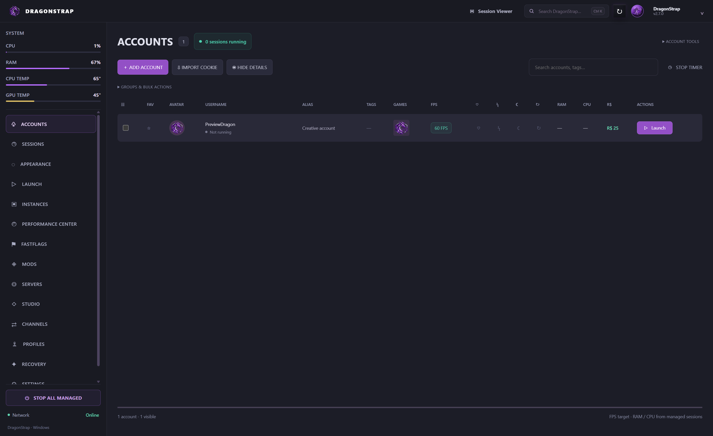

01 WINDOWS / ROBLOX
Stable v2.7.0DragonStrap.
Your Roblox launch, with more control. A distinctive account workspace with installation, updates, profiles, system meters, and recovery tools.
- Accounts & session workflows
- System monitoring at a glance
- Experimental local Mods
Windows x64 · Unsigned packages. Experimental features retain documented acceptance limits.
